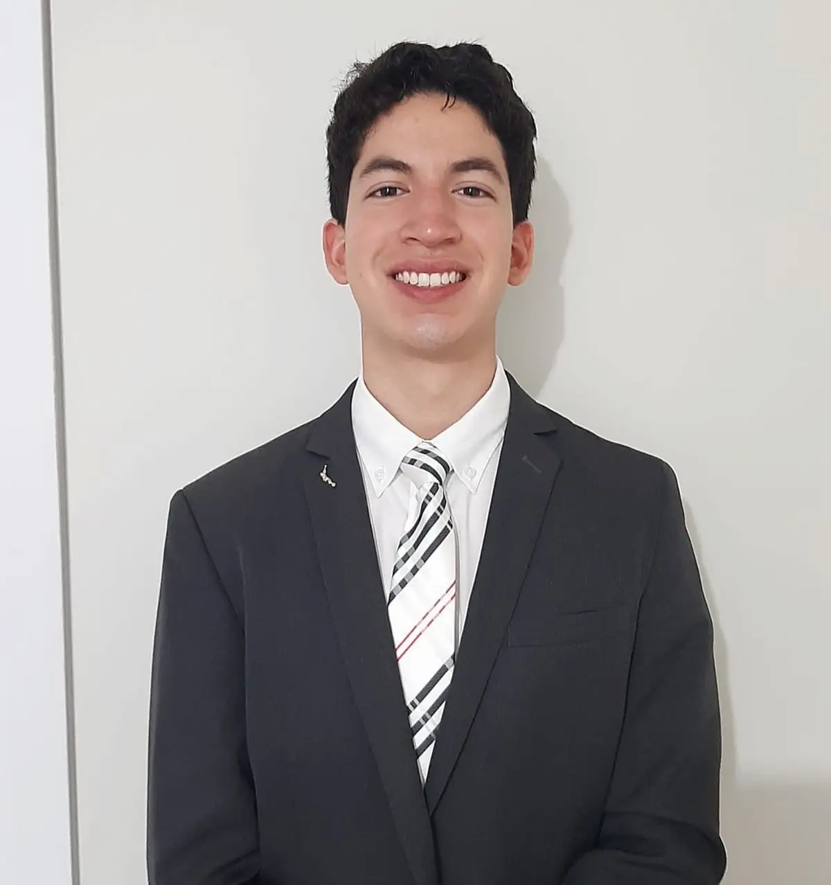

Home
About me
My name is Fabian Reyes. I was born and raised in Antofagasta, Chile. I am 22 years old, and I am the oldest of three siblings. I have two younger sisters, one who is 20 years old and another who is 6.
I enjoy spending time with my family and playing sports. My favorite sports are basketball and football, but what I enjoy most is playing sports with my friends.
I am currently studying Software Development at BYU-Idaho. Ever since I was a child, I have been fascinated by computers and programming. Being able to study what I love right now feels like I am achieving my dreams and accomplishing my goals.
Student Photo
